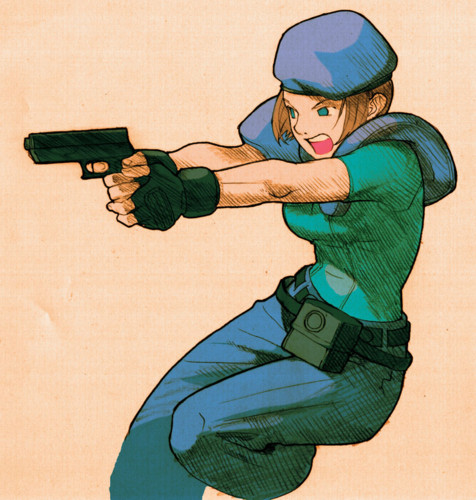

This is a paragraph in the message window. You could do a lot of things in here like have a pop up that shows promotion information,images, or create a login/register for users
 CloseMarvel vs. Capcom: Clash of Super Heroes is a crossover fighting game developed and published by Capcom. It is the third installment in the Marvel vs. Capcom series, which features characters from Capcom's video game franchises and characters from Marvel Comics. The game debuted in Japanese and North American arcades in 1998. It was ported to the Dreamcast in 1999 and the PlayStation in 2000.
$39.99
CloseIn Marvel vs. Capcom 2, players select a team of characters from the Marvel and Capcom universes to engage in combat and attempt to knock out their opponents.The character artwork uses traditional 2D-animated sprites, while the backgrounds and visual effects are rendered in 3D. This makes Marvel vs. Capcom 2 the first game in the franchise to feature 2.5D graphics.
$49.99
CloseX-Men vs. Street Fighter is a crossover fighting video game developed and published by Capcom. It is Capcom's third fighting game to feature Marvel Comics characters, following X-Men: Children of the Atom and Marvel Super Heroes, and the first installment in the Marvel vs. Capcom series.
$59.99
CloseCapcom vs. SNK Pro is a fighting game that was developed by Capcom and released in 2000. It is an upgrade to the original Capcom vs. SNK, which features characters from various Capcom and SNK franchises, most notably Street Fighter II and The King of Fighters.
$29.99
CloseStreet Fighter III 3rd Strike is the second follow-up to Street Fighter III, following Street Fighter III: 2nd Impact. Like its predecessors, it runs on the CP System III hardware. 3rd Strike increased the character roster by adding five new characters, notably including Chun-Li. It also added further refinements to the previous game's play mechanics and rules.
$39.99
CloseStreet Fighter Alpha 3 is a 2D competitive fighting game originally released by Capcom for the arcades in 1998. It is the third game in the Street Fighter Alpha sub-series, which serves as a prequel to Street Fighter II, and ran on the same CP System II hardware as previous Alpha games.Alpha 3 further expanded the playable fighter roster from Street Fighter Alpha 2 and added new features such as selectable fighting styles called "isms".
$39.99
Close